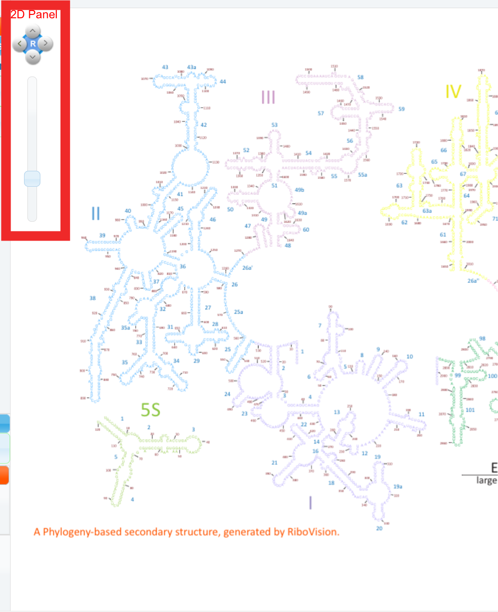

The site is best used with a three button mouse and scroll wheel. Alternative input styles are supported though. Jmol has its own control scheme and this is left unchanged, at least for now.
Within the 2D panel, you can drag the secondary structure around with the mouse in the x and y directions, as well as zoom in with the scroll wheel on your mouse. Alternatively, you may use the manual navigational compass buttons and zoom bar found here in the upper left corner. This big “R” resets the secondary structure to the default view.
If you move your mouse pointer to the 3D panel on the right, navigation control will be transferred to the Jmol app. Note that your mouse navigational controls will operate differently once you move from the 2D panel to the 3D panel. To rotate the molecule in the 3D panel, click and hold the left mouse button. To translate the molecule in the plane of the screen, double click and hold the left mouse button, anywhere within the 3D panel, and drag the cursor. Finally, the mouse wheel controls zoom: scrolling will zoom the molecule in and out.
We are working on our own Jmol mouse figure. You can find the Jmol Mouse Manual here.